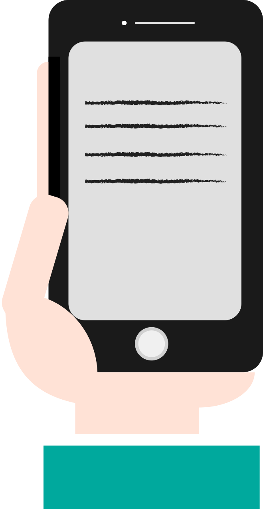

- Turn on your portable radio for information and safety advisories.
- Phone service may be out. When possible, text or call your out-of-area contact and tell
them where you are, THEN STAY OFF THE PHONE. This will allow calls to be made for
emergencies.
- Normally, in declared disaster areas resources will be provided from federal, state,
and local government agencies.
- Talk with your family about how they are feeling.
- Reach out to neighborhood or community organizations and get involved. Your voice is
important in deciding how your community will rebuild in the years to come.